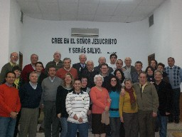

CUBA
En colaboración con la Pastoral de Personas con Discapacidad de Cuba, se ha comenzado el envío y entrega de Biblias en braille para las principales bibliotecas públicas de Cuba que tienen habilitadas una zona para ciegos. Por el momento hemos enviado 6 y restan otras 10 para completar la distribución. Confiamos que el Señor use este medio. Ya hemos recibido noticias que nos informan que muchos ciegos están acudiendo a las bibliotecas a leer la Palabra de Dios. Oremos para que el Señor provea de los recursos económicos para seguir adelante con este proyecto, ya que cada Biblia tiene un costo de producción de 330,00 €.

SEMBRADORES DE LUZ
Ya hemos editado más de 800 cd del nº 1 "Un Regalo para Ti" del proyecto Sembradores de Luz. Muchas iglesias se han unido a este proyecto y estamos seguros que el Señor lo usará para que ciegos y ciegas puedan alcanzar la Salvación.
Nueva Luz © 2014 | nuevaluz@nuevaluz.org | diseño web